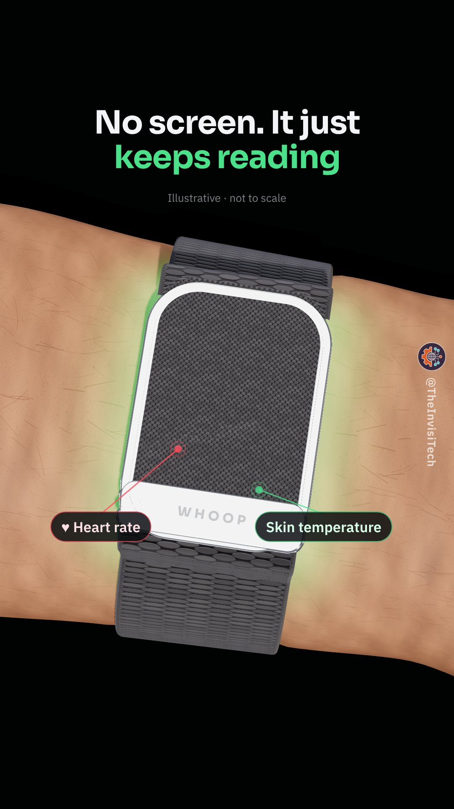
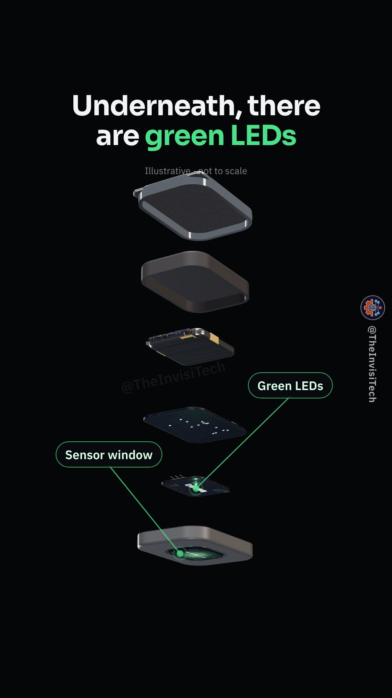
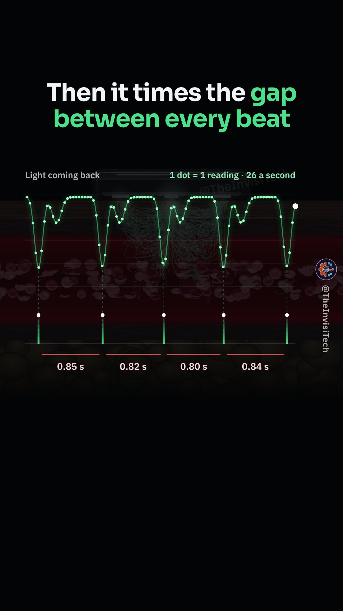
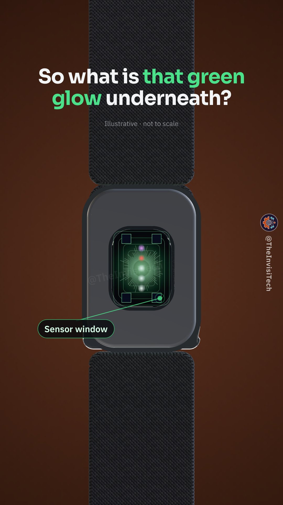

No screen. So how does it read your body?
S1 · 0.0–4.0 s
"This band has no screen. So how does it read your body?"
Pulse travels along the vessels under the band

S2 · 4.0–8.0 s
"Inside: a battery, a tiny processor, and green LEDs."
Layers separate in line, one by one; LEDs switch on last

S3 · 8.0–14.0 s
"Blood soaks up green light, so every heartbeat dims the glow. The gaps between beats are your HRV."
Starts on the skin slice (light + flowing cells), then the wave and the beat gaps · label "HRV"
Sleep stages (illustrative)
At night, it reads your sleep stages
S4 · 14.0–20.0 s · BLENDER (PC)
"At night, heart rate, breathing and movement combine into your sleep stages."
Journal · last night
Had alcohol?
YesNo
You log it. The band does not detect alcohol.
Overnight (illustrative)
A drink can show up in your night
S5 · 20.0–25.0 s
"Log a drink, and that night can show a higher resting heart rate and lower HRV."
Recovery "may be lower" · never "WHOOP detects alcohol"
≈ 112–122 / 72–80
estimated range (example)
It estimates blood pressure trends
WHOOP MG / Life
Wellness estimate — not a medical measurement.
S6 · 25.0–31.0 s
"On WHOOP MG, a cuff calibration lets it estimate blood-pressure trends."
Signals in. Answers out.
S7 · 31.0–37.0 s
"All of it feeds models for oxygen, stress, strain and more."
Cards pop one by one on each electronic pulse; rings fill at the end

YOUR BODY.
DECODED.
S8 · 37.0–38.5 s
"Your body, decoded."
Hero: pod reassembles, slow turn, green rim light (top side shown in final)
InvisiTech
@TheInvisiTech · Like · Comment · Follow
Subscribe
Body decoded.
END · 38.5–40.0 s
VOICE "Follow InvisiTech for more."